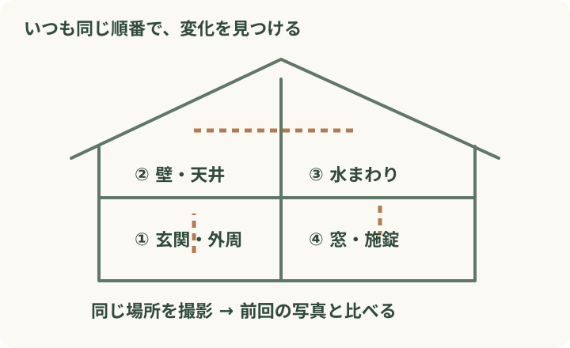
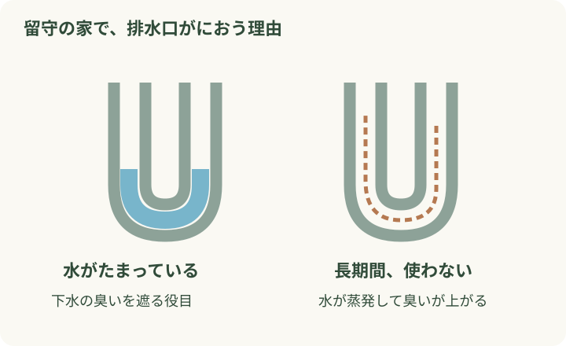

親の入院や、冬の間の同居。しばらく実家を空けることになったとき、荷物の準備に追われて、家のことは後回しになりがちです。
気がかりを減らすには、誰が見に行くか、何を見るか、困ったら誰へ連絡するかを先に決めておくこと。売却や大きな片付けは後で考えるとしても、帰ってこられる家を守る準備は今日から始められます。
「誰かが見てくれるはず」をなくす、留守の家の準備と見回り
公開日：
 文｜エイスケ（住宅と教育の専門家）
文｜エイスケ（住宅と教育の専門家）

親の入院や、冬の間の同居。しばらく実家を空けることになったとき、荷物の準備に追われて、家のことは後回しになりがちです。
気がかりを減らすには、誰が見に行くか、何を見るか、困ったら誰へ連絡するかを先に決めておくこと。売却や大きな片付けは後で考えるとしても、帰ってこられる家を守る準備は今日から始められます。
「今度、時間があるときに見に行こう」では、誰も行けないままになりがちです。まず次の一回、誰がいつ行けそうかを話してみませんか。見回り、連絡を受ける役、修理を判断する役は、一人で兼ねても大丈夫。行けなくなったときの代わりの人と、鍵の保管先も一緒に決めておくと安心です。
見回り：＿＿さん／次回：＿＿月＿＿日
鍵の保管先：＿＿＿＿／予備の連絡先：＿＿＿＿
不具合を見つけたら：＿＿さんへ写真を送る
修理を依頼する人：＿＿さん／相談先：＿＿＿＿
急ぎの修理で連絡がつかないとき：＿＿＿＿
定期的に通うのが難しければ、地域の管理サービスも選択肢です。たとえば郵便局の「空き家みまもり」は、月1回の外観などの確認と写真付き報告が基本。[2] 室内の通風・通水まで必要なら、それも含むサービスかを確認しましょう。訪問回数だけでなく、家族ができない作業を頼めるかで選ぶと、依頼後の行き違いを減らせます。
留守中に困りそうなのは、たまっていく郵便物や、傷んでしまう冷蔵庫の食品。出発前に家の中を一周し、次の表を見ながら残すもの・片付けるものを確かめてみましょう。新聞などの定期配達は、必要に応じて停止や届け先の変更を手配します。
| 出る前の確認 | 決めておくこと |
|---|---|
| 郵便・配達物 | 回収する人。不在届など利用できる手続きと期間は郵便局へ確認。[3] |
| 食品・ごみ | 生鮮食品とごみを残さない。冷蔵庫を止めるなら中を空にして清掃・乾燥。 |
| 電気 | 防犯設備、換気、給湯器の凍結防止など、通電が必要なものを確認。 |
| 水道・ガス | 止め方と再開方法を契約先・設備説明書で確認。冬は凍結対策も相談。 |
留守中も動かしておきたい設備があるため、電気・水道・ガスは一つずつ判断を。どれを止めてよいか迷ったら、設備の型番を手元に置いてメーカーや施工者へ聞いてみましょう。
毎回、家を一から調べるのは大変です。回る順番と撮る場所を決めておくと、小さな変化に気づきやすくなります。

見回りの帰りに、写真と短いメモを家族へ。「今日は変わりなし」の一言でも、離れて暮らす家族には様子が伝わります。次の予定も添えておくと、引き継ぎが楽になります。
○月○日、担当：○○
変わったところ：居間の天井に新しい染み（写真あり）
次にすること：家族へ連絡し、雨漏りの点検を相談
次回の見回り：○月○日、担当：○○
家族内で使うための記入例です。染みは前回と同じ位置から撮ると、大きさの変化を比べやすくなります。
しばらく使っていない家で、排水口のにおいが気になることがあります。原因の一つは、排水管の途中にたまる水が蒸発すること。この水には、下水の臭いが上がるのを防ぐ役目があります。[1]

水道が使え、漏水などの異常がない場合は、見回り時に水を流して排水を確認します。長期の止水や凍結対策をしている家では、その管理方法に沿って対応を。強いにおいや漏れが続くときは、写真や状況を添えて専門業者へ相談しましょう。
帰宅当日にお湯が出ない、冷蔵庫が冷えていない、という事態は避けたいですね。戻る前に、必要な契約の再開や設備の状態を確認します。
入院後などで暮らし方が変わるなら、玄関の段差やトイレまでの移動も確認を。手すりや照明など、帰宅前に整えておきたい場所を家族で話してみましょう。
Q. いつ戻るか決まっていません。 A. 先の予定が立たないと、どこまで準備するか迷いますね。まずは次の見回りだけ決めて、1か月などの区切りで「この通い方を続けられそうか」を家族で話してみましょう。家の状態や負担に合わせて、管理方法を変えていけます。
Q. 家族全員が遠方です。 A. 無理に帰省だけで管理しようとせず、地域の管理業者などへ頼む範囲を考えてみてください。日常の見回りを任せ、修理や費用の判断は家族がする分担もできます。
「次に実家を見に行くのは、誰が、いつ？」 まずそのひとつを決め、鍵と連絡先を共有するところから始めてみてください。
確認日：2026年11月8日。本文と図は独自に制作。
給水・排水・給湯設備、換気設備、浄化槽、給湯器、玄関の鍵、雨どい
部屋・建材・設備から機能を確かめる ↗関連記事
この記事を書いた人｜エイスケ
1986年生まれ。実家の工務店・不動産に10年間従事したのち、教育の世界へ。住宅と教育、両方の視点から「豊かな暮らし」をテーマに執筆します。※本コラムは筆者個人の見解・経験に基づくものです。最終的な判断は各分野の専門家にご相談ください。